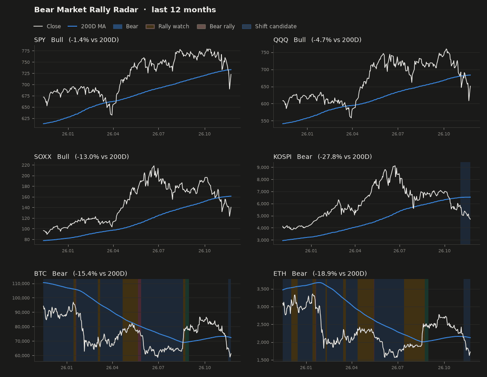
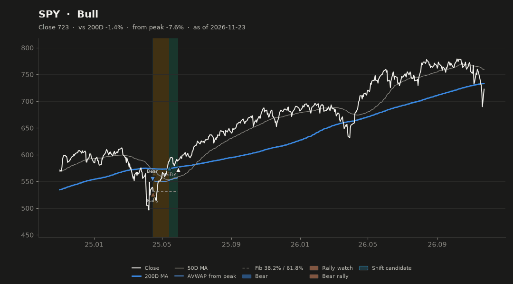
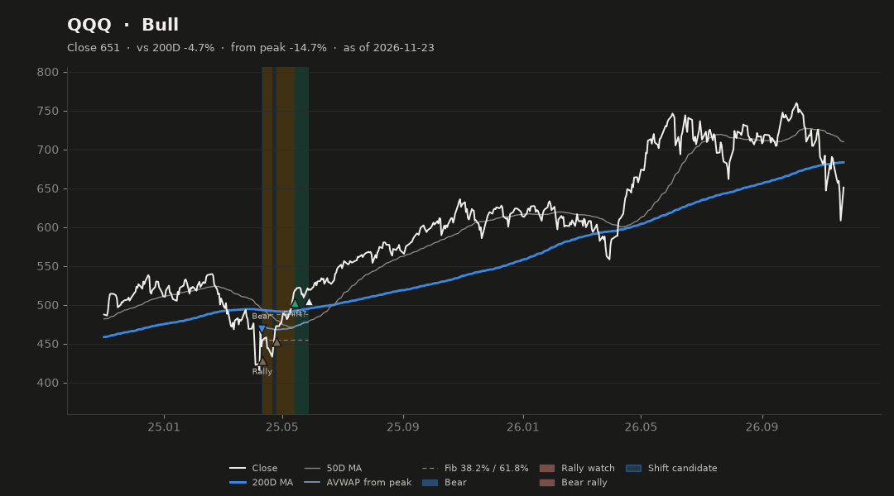
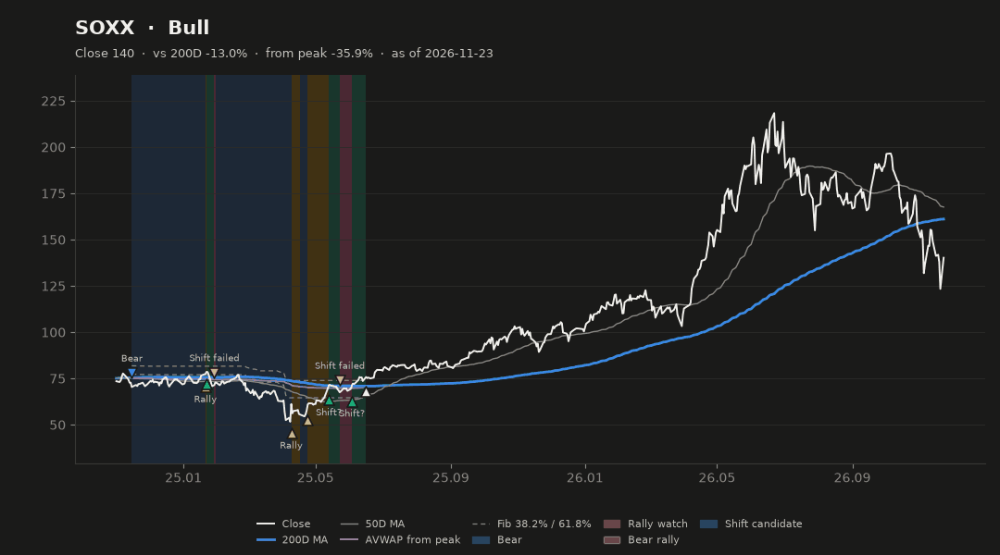
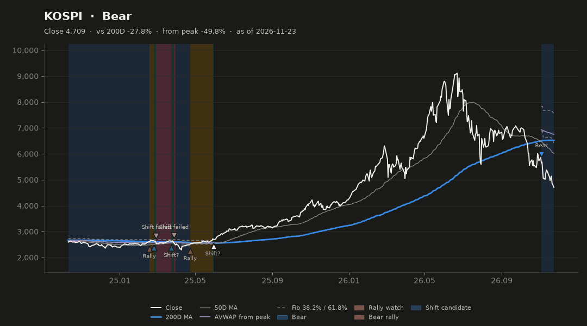
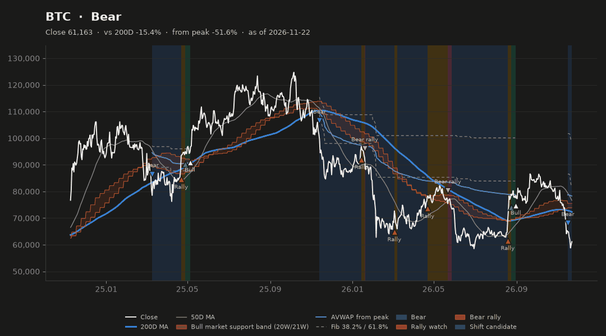
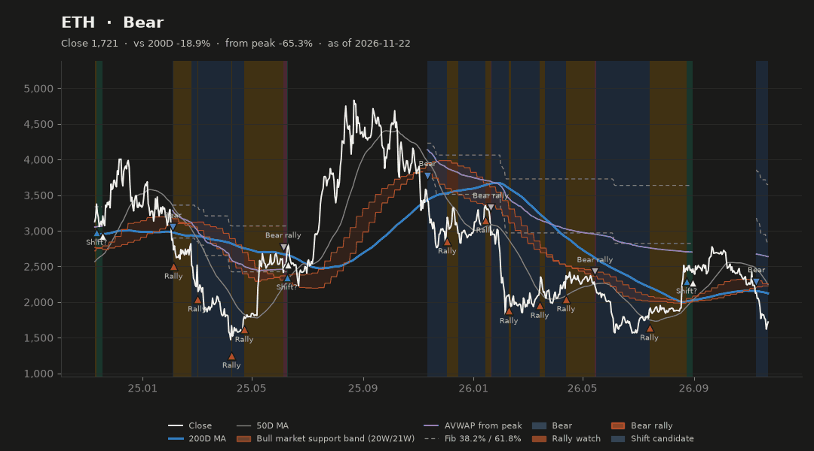

베어랠리 레이더
| 자산 | 상태 | 종가 | 200일선 대비 | 고점 대비 | 저점 대비 | RSI | 다음 조건 |
|---|---|---|---|---|---|---|---|
| SPY S&P 500 (SPY) | 강세 5/30(금)부터 | 722.51 11/23(월) | −1.4% 하락 아님 | −8% | — | 42 | 베어 진입 대기: 데드크로스 + 63일 고점 −10% |
| QQQ 나스닥100 (QQQ) | 강세 5/28(수)부터 | 651.03 11/23(월) | −4.7% 하락 아님 | −15% | — | 42 | 베어 진입 대기: 데드크로스 (50·200일선 간격 3.9%) |
| SOXX 반도체 (SOXX) | 강세 6/16(월)부터 | 140.22 11/23(월) | −13.0% 하락 아님 | −36% | — | 43 | 베어 진입 대기: 데드크로스 (50·200일선 간격 4.0%) |
| KOSPI 코스피 | 베어 11/3(화)부터 | 4,709 11/23(월) | −27.8% 하락 아님 | −50% | +2.7% | 31 | 5,045 위 마감 시 반등 감시 (저점 +10%) |
| BTC 비트코인 | 베어 11/16(월)부터 | 61,163 11/22(일) | −15.4% 하락 중 | −52% | +11.0% | 27 | 66,127 위 마감 시 반등 감시 (저점 +20%) |
| ETH 이더리움 | 베어 11/9(월)부터 | 1,721 11/22(일) | −18.9% 하락 중 | −65% | +12.1% | 30 | 1,842 위 마감 시 반등 감시 (저점 +20%) |

- 미국 브레드스는 11/20(금) 기준 (원천 하루 지연 — 직전 값 유지)
자산별 판정
S&P 500 (SPY) 강세
강세 · 200일선 −1.4%
다음 조건 · 베어 진입 대기: 데드크로스 + 63일 고점 −10%

베어랠리 근거 0/7 (판정 기준 3개 + 반등 고점 대비 2ATR 반락)
전환 점수 1/6 (전환 후보 기준 3점)
미국 브레드스(대형주 97종 근사, 2026-11-20 기준): 200일선 위 39% · 50일선 위 31% · ZBT 10일 EMA 0.308 (셋업 진행)
최근 이벤트
| 날짜 | 이벤트 | 종가 | 근거 |
|---|---|---|---|
| 2025-11-28 | ZBT 발생 | 683.39 | |
| 2025-05-30 | 강세 확정 | 589.39 | 200일선 위 종목 50%↑ · 주봉 안착 · 200일선 하락 멈춤 · 200일선 회복 |
| 2025-05-14 | 전환 후보 | 587.59 | 200일선 위 종목 50%↑ · 200일선 하락 멈춤 · 200일선 회복 |
| 2025-04-15 | 반등 감시 시작 | 537.61 | |
| 2025-04-14 | 베어 진입 | 539.12 | |
| 2024-08-15 | ZBT 발생 | 553.07 | |
| 2023-11-02 | ZBT 발생 | 430.76 | |
| 2023-10-17 | ZBT 근접 실패 | 436.02 | |
| 2023-08-29 | ZBT 발생 | 449.16 | |
| 2023-02-06 | 강세 확정 | 409.83 | 200일선 위 종목 50%↑ · 주봉 안착 · 200일선 회복 |
| 2023-02-03 | 전환 후보 | 412.35 | 200일선 위 종목 50%↑ · 주봉 안착 · 200일선 회복 |
| 2023-02-02 | 반등 감시 시작 | 416.78 |
데이터: nasdaq · 2026-11-23 마감 (정규장 마감 시세로 보강)
나스닥100 (QQQ) 강세
강세 · 200일선 −4.7% · 고점 −15%
다음 조건 · 베어 진입 대기: 데드크로스 (50·200일선 간격 3.9%)

베어랠리 근거 0/7 (판정 기준 3개 + 반등 고점 대비 2ATR 반락)
전환 점수 1/6 (전환 후보 기준 3점)
미국 브레드스(대형주 97종 근사, 2026-11-20 기준): 200일선 위 39% · 50일선 위 31% · ZBT 10일 EMA 0.308 (셋업 진행)
최근 이벤트
| 날짜 | 이벤트 | 종가 | 근거 |
|---|---|---|---|
| 2025-11-28 | ZBT 발생 | 619.25 | |
| 2025-05-28 | 강세 확정 | 518.91 | 200일선 위 종목 50%↑ · RSI 레인지 전환 · 주봉 안착 · 200일선 하락 멈춤 · 200일선 회복 |
| 2025-05-14 | 전환 후보 | 518.68 | 200일선 위 종목 50%↑ · RSI 레인지 전환 · 200일선 회복 |
| 2025-04-25 | 반등 감시 시작 | 472.56 | |
| 2025-04-21 | 반등 소멸 → 재감시 | 433.11 | |
| 2025-04-11 | 반등 감시 시작 | 454.40 | |
| 2025-04-10 | 베어 진입 | 446.18 | |
| 2024-08-15 | ZBT 발생 | 474.42 | |
| 2023-11-02 | ZBT 발생 | 363.44 | |
| 2023-10-17 | ZBT 근접 실패 | 368.20 | |
| 2023-08-29 | ZBT 발생 | 374.77 | |
| 2023-02-06 | 강세 확정 | 303.59 | 200일선 위 종목 50%↑ · RSI 레인지 전환 · 주봉 안착 · 200일선 회복 |
데이터: nasdaq · 2026-11-23 마감 (정규장 마감 시세로 보강)
반도체 (SOXX) 강세
강세 · 200일선 −13.0% · 고점 −36%
다음 조건 · 베어 진입 대기: 데드크로스 (50·200일선 간격 4.0%)

베어랠리 근거 0/7 (판정 기준 3개 + 반등 고점 대비 2ATR 반락)
전환 점수 1/6 (전환 후보 기준 3점)
미국 브레드스(대형주 97종 근사, 2026-11-20 기준): 200일선 위 39% · 50일선 위 31% · ZBT 10일 EMA 0.308 (셋업 진행)
최근 이벤트
| 날짜 | 이벤트 | 종가 | 근거 |
|---|---|---|---|
| 2025-11-28 | ZBT 발생 | 98.91 | |
| 2025-06-16 | 강세 확정 | 75.81 | 200일선 위 종목 50%↑ · RSI 레인지 전환 · 주봉 안착 · 200일선 회복 |
| 2025-06-03 | 전환 후보 | 71.21 | 200일선 위 종목 50%↑ · RSI 레인지 전환 · 200일선 회복 |
| 2025-05-23 | 전환 실패 → 베어랠리 | 67.52 | 200일선 · 고점 AVWAP · 피보 38.2%↑ |
| 2025-05-13 | 전환 후보 | 71.25 | 200일선 위 종목 50%↑ · RSI 레인지 전환 · 200일선 회복 |
| 2025-04-24 | 반등 감시 시작 | 61.01 | |
| 2025-04-17 | 반등 소멸 → 재감시 | 55.52 | |
| 2025-04-09 | 반등 감시 시작 | 61.21 | |
| 2025-01-30 | 반등 소멸 → 재감시 | 72.91 | |
| 2025-01-29 | 전환 실패 → 베어랠리 | 71.46 | RSI 천장 · 50일선 · 200일선 · 고점 AVWAP · 피보 38.2%↑ |
| 2025-01-22 | 전환 후보 | 78.60 | 200일선 위 종목 50%↑ · 주봉 안착 · 200일선 회복 |
| 2025-01-21 | 반등 감시 시작 | 77.48 |
데이터: nasdaq · 2026-11-23 마감 (정규장 마감 시세로 보강)
코스피 베어
베어 · 고점 −50% · 저점 +2.7%
다음 조건 · 5,045 위 마감 시 반등 감시 (저점 +10%)

베어랠리 근거 0/5 (판정 기준 3개 + 반등 고점 대비 2ATR 반락)
전환 점수 1/4 (전환 후보 기준 3점)
최근 이벤트
| 날짜 | 이벤트 | 종가 | 근거 |
|---|---|---|---|
| 2026-11-03 | 베어 진입 | 5,649 | |
| 2025-05-30 | 강세 확정 | 2,698 | RSI 레인지 전환 · 주봉 안착 · 200일선 회복 |
| 2025-05-29 | 전환 후보 | 2,721 | RSI 레인지 전환 · 주봉 안착 · 200일선 회복 |
| 2025-04-23 | 반등 감시 시작 | 2,526 | |
| 2025-03-31 | 반등 소멸 → 재감시 | 2,481 | |
| 2025-03-28 | 전환 실패 → 베어랠리 | 2,558 | 50일선 · 200일선 · 고점 AVWAP · 피보 38.2%↑ |
| 2025-03-24 | 전환 후보 | 2,632 | RSI 레인지 전환 · 주봉 안착 · 200일선 회복 |
| 2025-02-28 | 전환 실패 → 베어랠리 | 2,533 | 200일선 · 고점 AVWAP · 피보 38.2%↑ |
| 2025-02-24 | 전환 후보 | 2,645 | RSI 레인지 전환 · 주봉 안착 · 200일선 회복 |
| 2025-02-17 | 반등 감시 시작 | 2,610 | |
| 2024-09-30 | 베어 진입 | 2,593 | |
| 2023-12-19 | 강세 확정 | 2,569 | 주봉 안착 · 200일선 하락 멈춤 · 200일선 회복 |
데이터: naver · 2026-11-23 마감
비트코인 베어
베어 · 고점 −52% · 저점 +11.0%
다음 조건 · 66,127 위 마감 시 반등 감시 (저점 +20%)

베어랠리 근거 0/6 (판정 기준 3개 + 반등 고점 대비 2ATR 반락)
전환 점수 0/4 (전환 후보 기준 3점)
최근 이벤트
| 날짜 | 이벤트 | 종가 | 근거 |
|---|---|---|---|
| 2026-11-16 | 베어 진입 | 64,817 | |
| 2026-08-31 | 강세 확정 | 78,563 | RSI 레인지 전환 · 주봉 안착 · 200일선 회복 |
| 2026-08-24 | 전환 후보 | 78,982 | RSI 레인지 전환 · 주봉 안착 · 200일선 회복 |
| 2026-08-19 | 반등 감시 시작 | 69,300 | |
| 2026-05-28 | 반등 소멸 → 재감시 | 73,513 | |
| 2026-05-22 | 베어랠리 판정 | 75,444 | RSI 천장 · 50일선 · 200일선 · BMSB |
| 2026-04-22 | 반등 감시 시작 | 78,209 | |
| 2026-03-08 | 반등 소멸 → 재감시 | 65,971 | |
| 2026-03-04 | 반등 감시 시작 | 72,683 | |
| 2026-01-20 | 반등 소멸 → 재감시 | 88,311 | |
| 2026-01-19 | 베어랠리 판정 | 92,560 | RSI 천장 · BMSB · 고점 AVWAP |
| 2026-01-14 | 반등 감시 시작 | 96,955 |
데이터: coinbase · 2026-11-22 마감
이더리움 베어
베어 · 고점 −65% · 저점 +12.1%
다음 조건 · 1,842 위 마감 시 반등 감시 (저점 +20%)

베어랠리 근거 0/6 (판정 기준 3개 + 반등 고점 대비 2ATR 반락)
전환 점수 0/4 (전환 후보 기준 3점)
최근 이벤트
| 날짜 | 이벤트 | 종가 | 근거 |
|---|---|---|---|
| 2026-11-09 | 베어 진입 | 2,132 | |
| 2026-08-31 | 강세 확정 | 2,467 | RSI 레인지 전환 · 주봉 안착 · 200일선 회복 |
| 2026-08-24 | 전환 후보 | 2,482 | RSI 레인지 전환 · 주봉 안착 · 200일선 회복 |
| 2026-07-14 | 반등 감시 시작 | 1,891 | |
| 2026-05-16 | 반등 소멸 → 재감시 | 2,180 | |
| 2026-05-15 | 베어랠리 판정 | 2,223 | RSI 천장 · 50일선 · BMSB |
| 2026-04-13 | 반등 감시 시작 | 2,370 | |
| 2026-03-21 | 반등 소멸 → 재감시 | 2,085 | |
| 2026-03-15 | 반등 감시 시작 | 2,179 | |
| 2026-02-11 | 반등 소멸 → 재감시 | 1,939 | |
| 2026-02-09 | 반등 감시 시작 | 2,104 | |
| 2026-01-21 | 반등 소멸 → 재감시 | 2,980 |
데이터: coinbase · 2026-11-22 마감
판정 규칙
- 베어 진입 — 주식: 종가 < 200일선, 200일선 하락(20봉 전 대비) 또는 데드크로스, 63일 고점 대비 −10% 이상. 크립토: 종가 < 200일선, 직전 확정 주봉 종가 < BMSB 하단(20주 SMA·21주 EMA), 63일 고점 대비 −20% 이상.
- 반등 감시 — 베어 레짐 안에서 직전 저점 대비 종가 +10%(크립토 +20%).
- 베어랠리 판정 — 저항 근거 3개 이상(RSI 60~70 천장, 50일선·200일선·BMSB·고점 AVWAP에 닿은 뒤 아래 마감, 하락폭 38.2% 이상 되돌림, 좁은 반등, ZBT 근접 실패) + 반등 고점 대비 2ATR 반락 + RSI 60 미만.
- 전환 후보 — 전환 점수 기준 이상(ZBT, 200일선 위 종목 50%↑, RSI 70 돌파 후 40 지지, 주봉 안착, 200일선 하락 멈춤, 200일선 회복). 브레드스가 없는 자산(국내·크립토)은 앞의 두 항목을 빼고 4점 만점에 3점.
- 강세 확정 — 전환 후보에서 주봉 2주 연속 기준선(주식 40주선, 크립토 BMSB 상단) 위 마감 + 종가 > 200일선 + 50일선 상승.
- 반등 중 기준 저점을 깨면 베어로 돌아가고, 반등폭의 50%를 되돌리면 다음 반등을 다시 감시합니다.
트레이딩뷰 지표(bear_rally_detector_v6.pine)와 같은 규칙·기본값입니다. 차이: 미국 브레드스는 S5TH·S5FI·NYSE 등락 대신 대형주 97종으로 근사하며, 근사 ZBT는 원본보다 자주 발생해 전환 점수 1점으로만 씁니다(단독 전환 우선권 없음). 상태 전환은 확정된 일봉으로만 판정하고 주봉 값은 직전 확정 주봉만 써서 지난 신호가 바뀌지 않습니다.